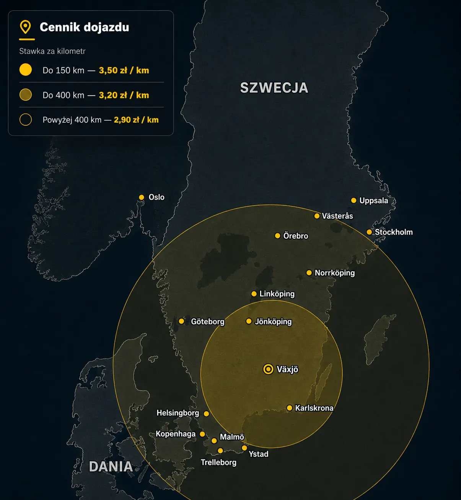

Ciężarówka nie odpala
Sprawdzam akumulatory, rozrusznik, alternator, układ paliwowy, immobilizer oraz błędy sterownika odpowiedzialne za problemy z rozruchem.
Jestem polskim mechanikiem samochodów ciężarowych, który mieszka i pracuje w Szwecji. Prowadzę mobilny serwis TIR z dojazdem do awarii ciężarówek i naczep.
Diagnostyka komputerowa · Elektryka · Pneumatyka · AdBlue / SCR / DPF · ABS / EBS · Serwis naczep
Mieszkam w Szwecji w okolicach Växjö. Z tego, co mi wiadomo, jestem jedynym mechanikiem Polakiem, który faktycznie tu mieszka. Inne warsztaty dojeżdżają z Polski, przez co koszt naprawy jest wysoki, a sama naprawa trwa bardzo długo.
Film uruchomi się dopiero po kliknięciu przycisku PLAY. Do tego momentu strona wyświetla tylko lekką miniaturkę.
Diagnostyka i naprawy z dojazdem w Szwecji, w tym w rejonie Växjö.
Sprawdzam akumulatory, rozrusznik, alternator, układ paliwowy, immobilizer oraz błędy sterownika odpowiedzialne za problemy z rozruchem.
Odczytuję błędy i parametry sterowników silnika, skrzyni biegów, ABS, EBS, AdBlue, SCR i DPF, aby szybciej znaleźć źródło usterki.
Naprawiam usterki instalacji, problemy z ładowaniem, oświetleniem, przewodami, masą, alternatorem, rozrusznikiem oraz elektryką naczepy.
Szukam nieszczelności i spadków ciśnienia oraz diagnozuję osuszacz, zawory, miechy zawieszenia i przewody układu pneumatycznego.
Diagnozuję błędy AdBlue, czujniki NOx, układ SCR, filtr DPF, komunikaty emisji spalin oraz problemy powodujące ograniczenie mocy.
Pomagam przy awariach EBS, pneumatyki, hamulców, oświetlenia, zawieszenia, osi podnoszonej, podpór i połączeń między ciągnikiem a naczepą.
Diagnozuję przegrzewanie, wycieki płynu, uszkodzone przewody, chłodnicę, termostat, wentylator oraz pompę wody.
Sprawdzam błędy ABS i EBS, czujniki kół, modulatory, przewody hamulcowe oraz komunikację między ciągnikiem i naczepą.
Sprawdzam filtr i ciśnienie paliwa, pompę, wtryskiwacze, zapowietrzenie układu oraz problemy związane z zanieczyszczonym paliwem i rozruchem zimą.

Mieszkam i pracuję w Szwecji. To tutaj znajduje się mój mobilny serwis samochodów ciężarowych.
Dzięki temu kontaktujesz się bezpośrednio z mechanikiem działającym lokalnie na szwedzkim rynku.
Obszar działania oraz podstrony poszczególnych miast uzupełnimy zgodnie z faktycznym zasięgiem serwisu.
Kliknij kraj, aby rozwinąć listę miejscowości i przejść do lokalnej strony mobilnego serwisu TIR.